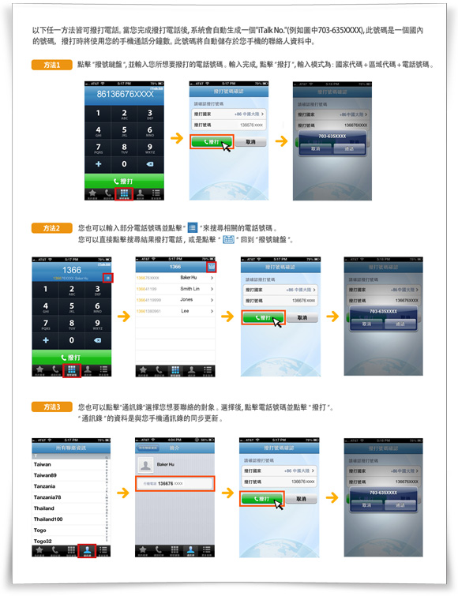

妙用電話巧省錢二：手機打長途不用流量不花錢
（弗吉尼亞維也納05月21日）
什麼？您還不知道？ iTalkBB當然提供手機打國際長途的服務了！
什麼？知道但是不會用？那小編在這裡就手把手的教您如何使用iTalkBB的手機打長途功能！
iTalkBB App是iTalkBB用戶獨享的手機國際長途服務，可以讓您免費或以超低費率撥打國際長途電話。您在使用時，只需直撥目的地號碼，也可直接使用手機通訊錄中的聯絡人訊息，無需再輸入接駁號。註冊之後，馬上下載，從此無需再購買電話卡。
我們的特點：
綁定iTalkBB帳戶後，隨時隨地手機撥打國際長途！現在註冊全球包月計劃，還送您2部手機共享500分鐘免費手機通話時間！
超超低費率，遠低於一般手機長途撥打工具及電話卡！
直接撥打目的地號碼！沒有接駁號，沒有密碼！
點擊通話記錄，輕鬆查詢及編輯最近撥打歷史！
可將親朋好友的號碼設為"我的最愛"，撥打省時省力！
僅在撥打時需要少量流量確認帳戶信息。手機打電話，不佔流量！
無任何隱藏費用！
iTalkBB手機打國際長途教程：
1.用您的智能手機在商店中找到免費的iTalkBB APP並下載安裝。查看詳細
2.輕鬆直撥電話號碼。 查看詳細
如此簡單、方便、實用的功能，就藏在您的手機里！ iTalkBB老用戶，馬上動起手來，下載iTalkBB APP，即安即用！
動心的朋友，現在加入iTalkBB家庭電話，每月只需$4.99起，即可獲得手機撥打國際長途功能和1年免費的iTalkTV高清中文電視。而原本??$24.99的無限包月計劃，現在前6個月僅需$14.99，更有2部手機共享每月500分鐘國際長途的限時優惠！
√ $14.99/月 無限暢打美國+全球
√ 免費贈送2部手機共享每月500分鐘國際長途
√ 免費贈送中國號碼950
√ 免費贈送1年高清中文電視iTalkTV
有央視、鳳凰衛視等30+正版頻道頻道的實時直播與72小時回看，海量電影、電視劇、養生、曲藝、娛樂、社會類綜藝節目免費無限點播。
更多詳情，請登入www.iTalkBB.com 或撥打24小時服務熱線1-877-482-5522查詢。
關於iTalkBB：
iTalkBB新電信是享譽全美的優秀通訊品牌，是國際電訊行業的領導和先驅。其以頂級全球網路和前沿技術為依託，以最具競爭力的價格為客戶提供高質、清晰的本地、國內及國際長途電話服務，以及高清中文電視直播、回播與點播服務。其電話業務能完全取代傳統家庭電話，並享受多重免費提供的附加功能如來電等待、三方通話、來電顯、來電轉接等。另有獨一無二的功能-中國大陸、台灣、香港、南韓當地號碼，當地親友只要撥打此號碼，就能接通到在美國的親友，而無需支付國際長途費用。 iTalkBB的高清中文電視服務，自問世以來便受到了廣泛的好評和歡迎。超過五十個熱門頻道支持實時直播與48小時回看，海量最新電影電視劇綜藝節目免費無限點播，讓用戶以最低價格盡享華語娛樂。 iTalkBB新電信將不斷努力，與您共同成就更美好的生活。 iTalkBB設有24小時中英文的客戶服務熱線??1-877-482-5522和官方網站www.iTalkBB.com，一年365天提供不間斷的服務與更多信息的查詢。